New Oriental
Star Mentor · 明星导师
Teaching across game design, web development and immersive media.
04 / Work
Bringing together creative technology, education and multimedia production.
Professional experience
Star Mentor · 明星导师
Teaching across game design, web development and immersive media.
Selected student work / 学生作品指导
A selection of student projects from my teaching practice, spanning VR, spatial storytelling, moving image and AR.
Creative work is credited to the students below. These projects are presented as student work from my teaching practice, separately from my own portfolio.
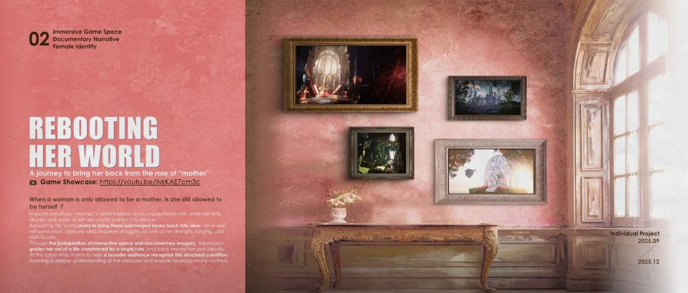
VR game & documentary narrative
Student: Leona · Jinze LiRCA · DD
An immersive journey that looks beyond the role of “mother” to rediscover a woman’s individuality. Game environments and documentary storytelling bring personal memory, identity and lived experience into dialogue.
The project develops a sequence of narrative spaces, from an insect factory and cage imagery to a chapel and underwater ruins. A later documentary extends the work into lived experience.
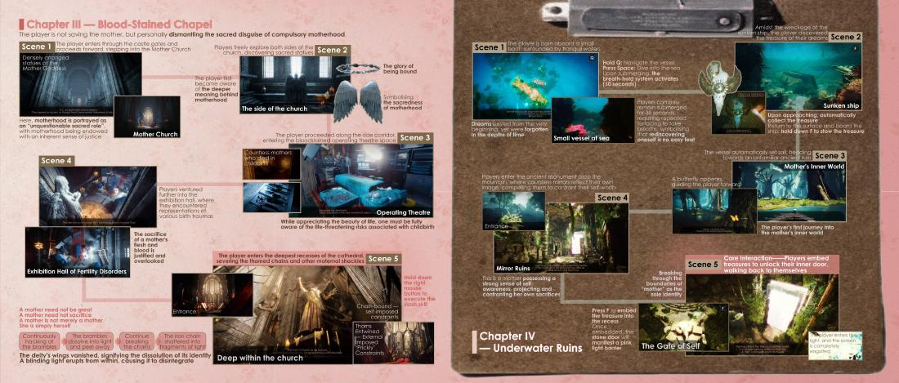
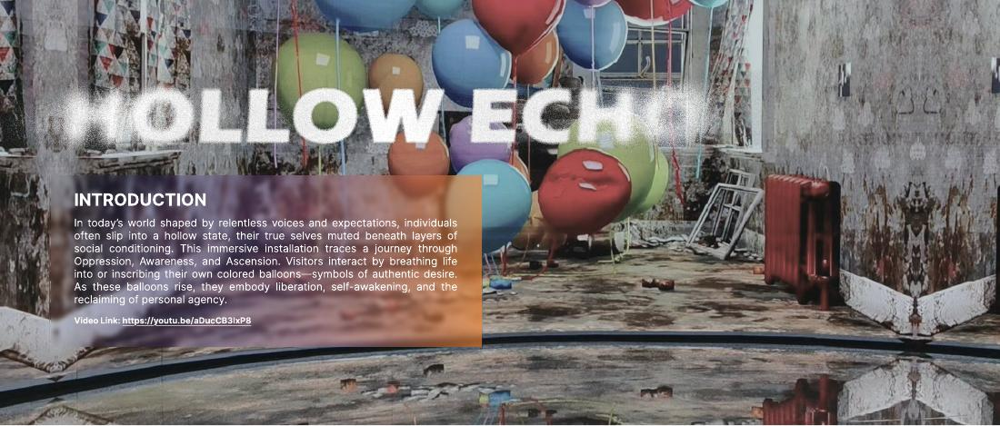
TouchDesigner spatial experience
Student: April · Yurou ZhengUSC · IDBT
A spatial experience about the self beneath external expectations. Balloons, moving images and audience interaction trace a journey from pressure and emptiness toward awareness and personal agency.
Monochrome balloons carrying faces give way to coloured balloons as the narrative shifts from external voices toward self-expression. The documented setup includes Kinect recognition, interactive video switching and a physical installation.
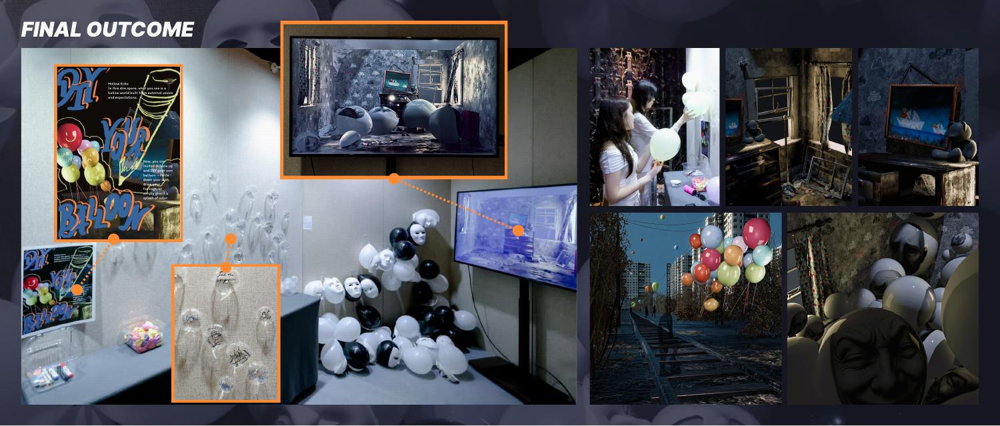
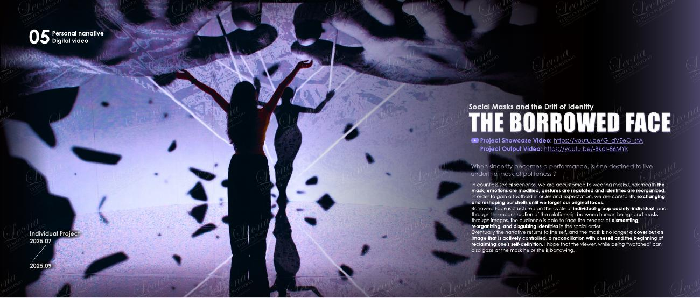
Narrative moving image & circular screen
Student: Leona · Jinze LiRCA · DD
An exploration of social masks and the shifting construction of identity. A purple-toned moving-image narrative unfolds across a circular screen and mirrored floor, placing the viewer within a field of projections and reflections.
The work follows a cycle from the individual to the group and society, then back to the self. Masks become images to confront and reshape, rather than only disguises to wear.
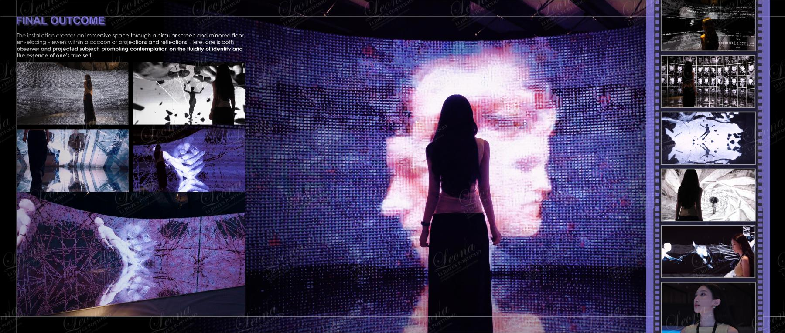
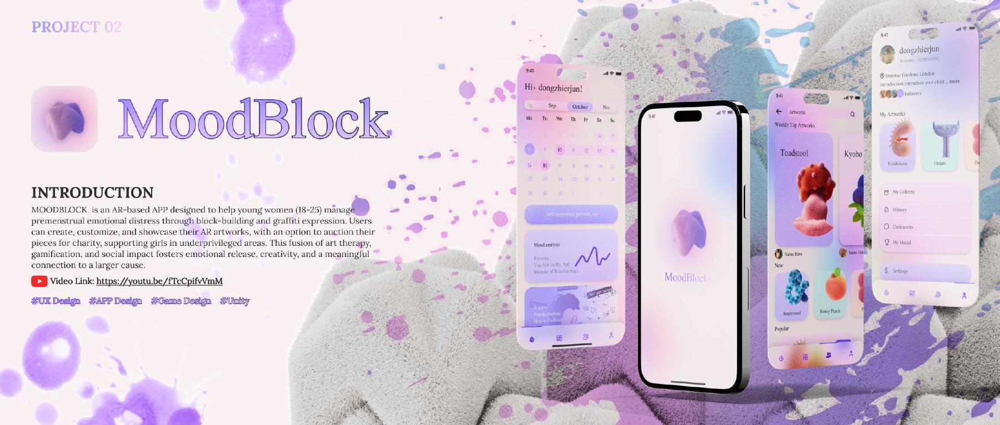
AR play & creative expression
Student: Zhijun ChenPolyU
An AR-based creative app exploring emotional expression through virtual block-building and graffiti. Users create, customise and share playful spatial artworks through a purple-toned interface.
The documented concept combines AR creation, mood-related interaction and a social space for sharing artworks. The project connects playful digital making with individual expression and sharing.
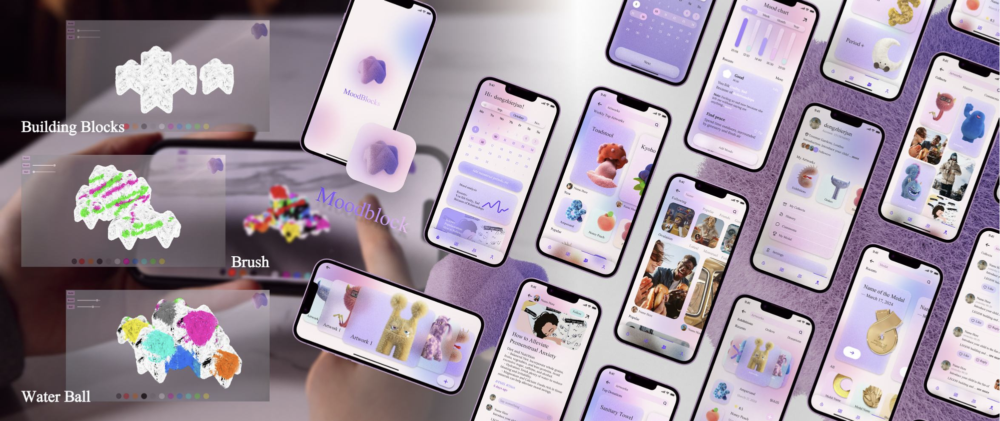
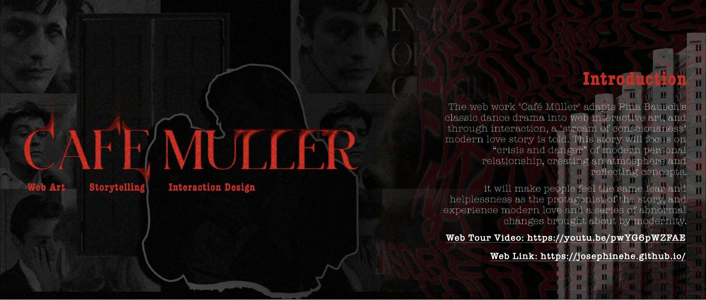
Web art & interactive storytelling
Student: Xueyi HeCornell University
A red-and-black web artwork that reinterprets Pina Bausch’s Café Müller through interactive, stream-of-consciousness storytelling about intimacy, uncertainty and modern relationships.
The project translates the atmosphere of the original dance work into a sequence of browser-based encounters, combining collage, visual composition, narrative and interaction design.
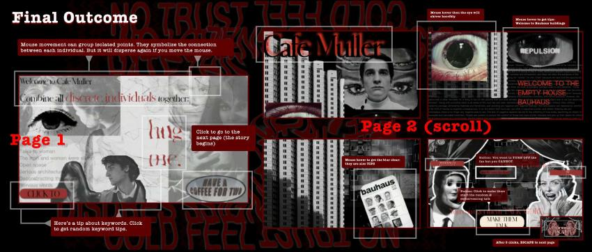
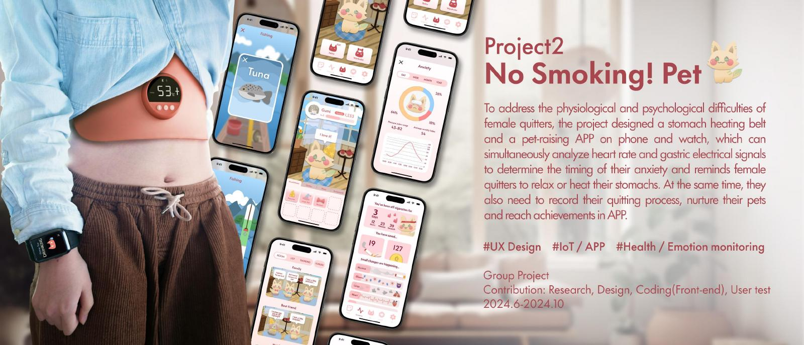
Playful interaction & wearable concept
Student: Binyan WangUSC · IDBT
A pet-raising app and wearable concept exploring support for women who are quitting smoking. Playful care routines, progress tracking and gentle prompts connect everyday interaction with the quitting journey.
The documented group project brings together research, UX design, front-end implementation and user testing. Its design concept combines phone and watch interfaces with a warming belt and virtual pet activities.
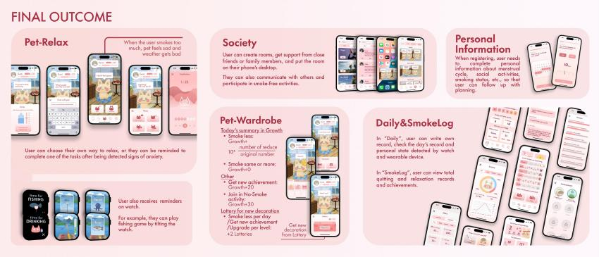
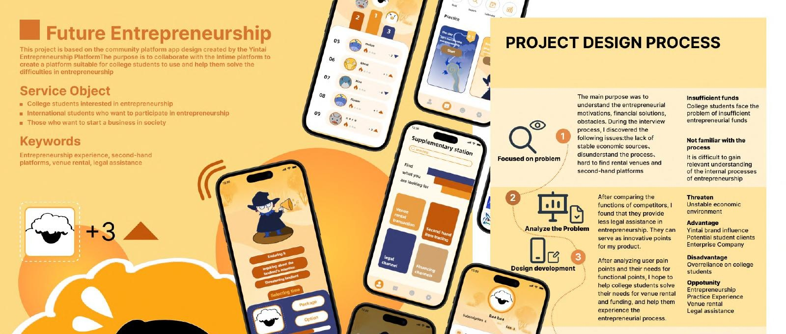
Entrepreneurship platform & service design
Student: Xiuyi JiaCMU · ETC
A yellow-toned community platform concept supporting students as they explore entrepreneurship. It connects playful learning with resources for venue rental, second-hand trading, legal assistance and financing.
The project maps entrepreneurial motivations and practical barriers into service features, a game-like learning journey and mobile interfaces. The illustrated character and warm palette create a recognisable entry point into a complex process.
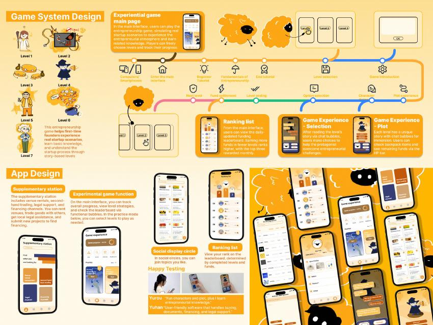
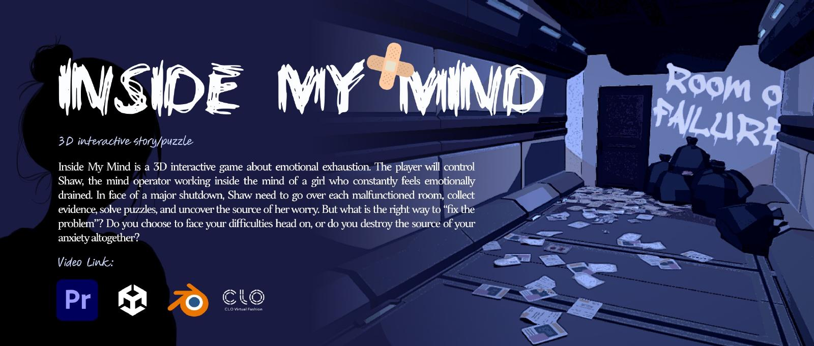
3D narrative puzzle game
Student: Haoyang LiNYU · Game Design
A 3D interactive story about emotional exhaustion. Playing as a mind operator, the player explores malfunctioning rooms, gathers evidence and solves puzzles to uncover the source of a young woman’s worries.
The game uses the mind as an explorable environment. Its rooms and narrative choices ask whether confronting a difficulty and removing its source are really the same thing. The portfolio documents level design, character and scene development, dialogue and implementation.
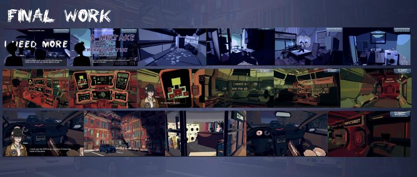
Student Research Mentoring / 学生研究指导
Selected student-authored papers from my research mentoring practice, exploring playful AI, cultural experiences and multisensory interaction.
AI-generated storytelling prompts and playful interaction as a way to support communication between grandparents and grandchildren.
AIEDCD 2026 · Springer Series in Design and Innovation, vol. 69, pp. 119–132.
Read publication ↗Exploring how conversational AI and reflection after an exhibition experience relate to visitors’ confidence in interpreting art.
ICEMCI 2026 · Acceptance confirmed; final publisher record awaiting verification.
Considering smell as a design material for multisensory experiences beyond the visual and auditory dimensions of VR.
AID 2026 · Acceptance confirmed; publication awaiting verification.
These are student-authored papers presented as research mentoring outcomes. Publication and acceptance are listed separately.
Internship experience
CGTN · Financial News Department
Multimedia production, social media content, video editing and motion graphics.
Launched and built the Xiaohongshu account from scratch during my internship, combining content curation, video editing, motion graphics and event visuals to share stories of Chinese Hanfu culture.